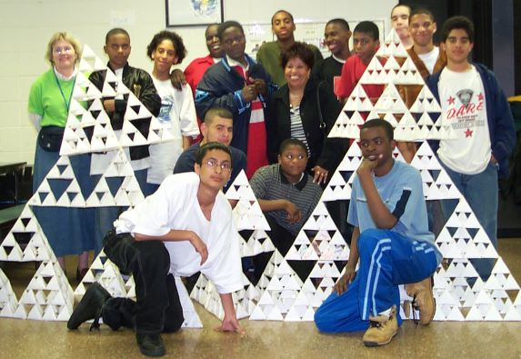

|  |
| Students involved in the Longfellow gasket project, along with their teachers, Bonnie Hole (left) and Janet Ortiz (center). |
The photo above is of some of my Longfellow students and their recent fractal construction. They put the gasket together in the cafeteria of Dunbar School last night, as part of show-and-tell with other Bridgeport schools. Here is the story.
For the past several years, Longfellow and a number of other Bridgeport schools have run after-school Gear Up for College math tutoring programs. Toward the end of each year, there is a celebration for families, with an evening of entertainment. Each Gear Up school brings a display that shows something they have done during the year, and the parents browse the displays before having dinner with the group.
For the past week, my students have been making tetrahedrons in their spare time. What started as an effort to make a few tetrahedrons and show them off at the upcoming celebration turned into an all-out race against time, gravity, and the elements. My students worked furiously to make as many tetrahedrons as they could, for the biggest possible gasket for the celebration.
The main logistical problem they faced was that the Gear Up celebration was not to be held at Longfellow, but at Dunbar School, some distance away. They decided to make building blocks for the tetrahedron and do the final assembly at Dunbar. They calculated that building blocks of 64 tetrahedrons were the largest that they could fit on the bus to Dunbar. So they made as many 64-tetrahedron building blocks as they could.
As luck would have it, the weather last night, the evening of the celebration, was rainy. Wrapping the building blocks in plastic bags tended to crush them, so the students decided to make a run for it from the bus to the school, trying to keep the pieces from getting too wet to hold their shape. Their strategy worked well, as only a few tetrahedrons suffered in the rain. What a sight it was to see our Longfellow bus of tetrahedrons pull up at Dunbar School!
After we arrived at the celebration, my students worked frantically to put their pieces together and even to build more tetrahedrons to try to get to the next stage. They taught one of the parents how to make tetrahedrons, and she joined them in adding to the size of the structure. They were irrepressible! We all had a fabulous time. The teamwork was simply amazing.
After the celebration, my students broke the structures back down into the building blocks and took them back on the bus to Longfellow.
In making the structure, we used quite a few math ideas-- in planning, estimating materials, projecting final results based on work done at any given point in time, and in keeping the structure sound as it grew larger. I expected this. What really impressed me was the teamwork that the activity elicited from my students and the huge sense of pride they felt in their final product. In retrospect, this outcome is pretty predictable, but the extent of the impact was much more than I expected. Today the gasket was all the BUZZ at Longfellow.
This is probably not the largest gasket you have seen come out of your summer program, but it might be the only one transported across town, assembled in a few minutes by middle grades students, and then disassembled and moved back to their home school.
Here are four views of a fractal New Year's bulletin board display: 1, 2, 3, 4,